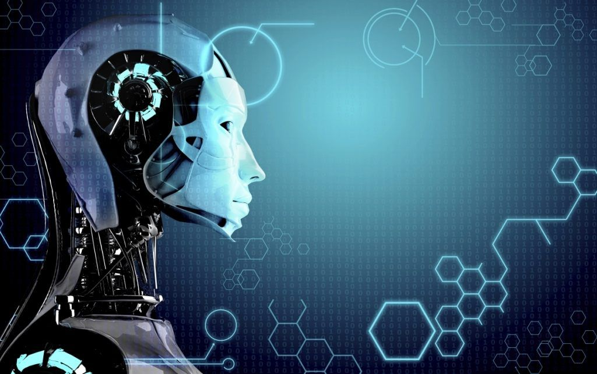

In the course of 60+ years of research, AI has developed a large number of tools to solve the most difficult problems in computer science. A few of the most general of these methods are discussed below.
Main articles: Search algorithm, Mathematical optimization, and Evolutionary computation
Many problems in AI can be solved in theory by intelligently searching through many possible solutions: Reasoning can be reduced to performing a search. For example, logical proof can be viewed as searching for a path that leads from premises to conclusions, where each step is the application of an inference rule. Planning algorithms search through trees of goals and subgoals, attempting to find a path to a target goal, a process called means-ends analysis.[129] Robotics algorithms for moving limbs and grasping objects use local searches in configuration space. Many learning algorithms use search algorithms based on optimization.
Simple exhaustive searches are rarely sufficient for most real world problems: the search space (the number of places to search) quickly grows to astronomical numbers. The result is a search that is too slow or never completes. The solution, for many problems, is to use "heuristics" or "rules of thumb" that eliminate choices that are unlikely to lead to the goal (called "pruning the search tree"). Heuristics supply the program with a "best guess" for the path on which the solution lies. Heuristics limit the search for solutions into a smaller sample size.
A very different kind of search came to prominence in the 1990s, based on the mathematical theory of optimization. For many problems, it is possible to begin the search with some form of a guess and then refine the guess incrementally until no more refinements can be made. These algorithms can be visualized as blind hill climbing: we begin the search at a random point on the landscape, and then, by jumps or steps, we keep moving our guess uphill, until we reach the top. Other optimization algorithms are simulated annealing, beam search and random optimization.
Evolutionary computation uses a form of optimization search. For example, they may begin with a population of organisms (the guesses) and then allow them to mutate and recombine, selecting only the fittest to survive each generation (refining the guesses). Forms of evolutionary computation include swarm intelligence algorithms (such as ant colony or particle swarm optimization) and evolutionary algorithms (such as genetic algorithms, gene expression programming, and genetic programming).

Main articles: Logic programming and Automated reasoning
Logic is used for knowledge representation and problem solving, but it can be applied to other problems as well. For example, the satplan algorithm uses logic for planning and inductive logic programming is a method for learning.
Several different forms of logic are used in AI research. Propositional or sentential logic is the logic of statements which can be true or false. First-order logic also allows the use of quantifiers and predicates, and can express facts about objects, their properties, and their relations with each other. Fuzzy logic, is a version of first-order logic which allows the truth of a statement to be represented as a value between 0 and 1, rather than simply True (1) or False (0). Fuzzy systems can be used for uncertain reasoning and have been widely used in modern industrial and consumer product control systems. Subjective logic models uncertainty in a different and more explicit manner than fuzzy-logic: a given binomial opinion satisfies belief + disbelief + uncertainty = 1 within a Beta distribution. By this method, ignorance can be distinguished from probabilistic statements that an agent makes with high confidence.
Default logics, non-monotonic logics and circumscription are forms of logic designed to help with default reasoning and the qualification problem. Several extensions of logic have been designed to handle specific domains of knowledge, such as: description logics; situation calculus, event calculus and fluent calculus (for representing events and time); causal calculus; belief calculus; and modal logics.
Main articles: Bayesian network, Hidden Markov model, Kalman filter, Decision theory, and Utility theory
Many problems in AI (in reasoning, planning, learning, perception and robotics) require the agent to operate with incomplete or uncertain information. AI researchers have devised a number of powerful tools to solve these problems using methods from probability theory and economics.
Bayesian networks are a very general tool that can be used for a large number of problems: reasoning (using the Bayesian inference algorithm), learning (using the expectation-maximization algorithm), planning (using decision networks) and perception (using dynamic Bayesian networks). Probabilistic algorithms can also be used for filtering, prediction, smoothing and finding explanations for streams of data, helping perception systems to analyze processes that occur over time (e.g., hidden Markov models or Kalman filters).
A key concept from the science of economics is "utility": a measure of how valuable something is to an intelligent agent. Precise mathematical tools have been developed that analyze how an agent can make choices and plan, using decision theory, decision analysis, and information value theory. These tools include models such as Markov decision processes, dynamic decision networks, game theory and mechanism design.

Main articles: Classifier (mathematics), Statistical classification, and Machine learning
The simplest AI applications can be divided into two types: classifiers ("if shiny then diamond") and controllers ("if shiny then pick up"). Controllers do, however, also classify conditions before inferring actions, and therefore classification forms a central part of many AI systems. Classifiers are functions that use pattern matching to determine a closest match. They can be tuned according to examples, making them very attractive for use in AI. These examples are known as observations or patterns. In supervised learning, each pattern belongs to a certain predefined class. A class can be seen as a decision that has to be made. All the observations combined with their class labels are known as a data set. When a new observation is received, that observation is classified based on previous experience.
A classifier can be trained in various ways; there are many statistical and machine learning approaches. The most widely used classifiers are the neural network, kernel methods such as the support vector machine, k-nearest neighbor algorithm, Gaussian mixture model, naive Bayes classifier, and decision tree. The performance of these classifiers have been compared over a wide range of tasks. Classifier performance depends greatly on the characteristics of the data to be classified. There is no single classifier that works best on all given problems; this is also referred to as the "no free lunch" theorem. Determining a suitable classifier for a given problem is still more an art than science.
Main articles: Artificial neural network and Connectionism
A neural network is an interconnected group of nodes, akin to the vast network of neurons in the human brain.
The study of non-learning artificial neural networks began in the decade before the field of AI research was founded, in the work of Walter Pitts and Warren McCullouch. Frank Rosenblatt invented the perceptron, a learning network with a single layer, similar to the old concept of linear regression. Early pioneers also include Alexey Grigorevich Ivakhnenko, Teuvo Kohonen, Stephen Grossberg, Kunihiko Fukushima, Christoph von der Malsburg, David Willshaw, Shun-Ichi Amari, Bernard Widrow, John Hopfield, Eduardo R. Caianiello, and others.
The main categories of networks are acyclic or feedforward neural networks (where the signal passes in only one direction) and recurrent neural networks (which allow feedback and short-term memories of previous input events). Among the most popular feedforward networks are perceptrons, multi-layer perceptrons and radial basis networks. Neural networks can be applied to the problem of intelligent control (for robotics) or learning, using such techniques as Hebbian learning, GMDH or competitive learning.
Today, neural networks are often trained by the backpropagation algorithm, which had been around since 1970 as the reverse mode of automatic differentiation published by Seppo Linnainmaa, and was introduced to neural networks by Paul Werbos.
Hierarchical temporal memory is an approach that models some of the structural and algorithmic properties of the neocortex.
Main article: Deep learning
Deep learning in artificial neural networks with many layers has transformed many important subfields of artificial intelligence, including computer vision, speech recognition, natural language processing and others.
According to a survey, the expression "Deep Learning" was introduced to the Machine Learning community by Rina Dechter in 1986 and gained traction after Igor Aizenberg and colleagues introduced it to Artificial Neural Networks in 2000. The first functional Deep Learning networks were published by Alexey Grigorevich Ivakhnenko and V. G. Lapa in 1965. These networks are trained one layer at a time. Ivakhnenko's 1971 paper describes the learning of a deep feedforward multilayer perceptron with eight layers, already much deeper than many later networks. In 2006, a publication by Geoffrey Hinton and Ruslan Salakhutdinov introduced another way of pre-training many-layered feedforward neural networks (FNNs) one layer at a time, treating each layer in turn as an unsupervised restricted Boltzmann machine, then using supervised backpropagation for fine-tuning. Similar to shallow artificial neural networks, deep neural networks can model complex non-linear relationships. Over the last few years, advances in both machine learning algorithms and computer hardware have led to more efficient methods for training deep neural networks that contain many layers of non-linear hidden units and a very large output layer.
Deep learning often uses convolutional neural networks (CNNs), whose origins can be traced back to the Neocognitron introduced by Kunihiko Fukushima in 1980. In 1989, Yann LeCun and colleagues applied backpropagation to such an architecture. In the early 2000s, in an industrial application CNNs already processed an estimated 10% to 20% of all the checks written in the US. Since 2011, fast implementations of CNNs on GPUs have won many visual pattern recognition competitions.
Deep feedforward neural networks were used in conjunction with reinforcement learning by AlphaGo, Google Deepmind's program that was the first to beat a professional human Go player.
Main article: Recurrent neural networks
Early on, deep learning was also applied to sequence learning with recurrent neural networks (RNNs) which are general computers and can run arbitrary programs to process arbitrary sequences of inputs. The depth of an RNN is unlimited and depends on the length of its input sequence. RNNs can be trained by gradient descent but suffer from the vanishing gradient problem. In 1992, it was shown that unsupervised pre-training of a stack of recurrent neural networks can speed up subsequent supervised learning of deep sequential problems.
Numerous researchers now use variants of a deep learning recurrent NN called the long short-term memory (LSTM) network published by Hochreiter & Schmidhuber in 1997. LSTM is often trained by Connectionist Temporal Classification (CTC). At Google, Microsoft and Baidu this approach has revolutionised speech recognition. For example, in 2015, Google's speech recognition experienced a dramatic performance jump of 49% through CTC-trained LSTM, which is now available through Google Voice to billions of smartphone users. Google also used LSTM to improve machine translation, Language Modeling and Multilingual Language Processing. LSTM combined with CNNs also improved automatic image captioning and a plethora of other applications.
Main article: Progress in artificial intelligence
In 1950, Alan Turing proposed a general procedure to test the intelligence of an agent now known as the Turing test. This procedure allows almost all the major problems of artificial intelligence to be tested. However, it is a very difficult challenge and at present all agents fail.
Artificial intelligence can also be evaluated on specific problems such as small problems in chemistry, hand-writing recognition and game-playing. Such tests have been termed subject matter expert Turing tests. Smaller problems provide more achievable goals and there are an ever-increasing number of positive results.
For example, performance at draughts (i.e. checkers) is optimal, performance at chess is high-human and nearing super-human (see computer chess: computers versus human) and performance at many everyday tasks (such as recognizing a face or crossing a room without bumping into something) is sub-human.
A quite different approach measures machine intelligence through tests which are developed from mathematical definitions of intelligence. Examples of these kinds of tests start in the late nineties devising intelligence tests using notions from Kolmogorov complexity and data compression. Two major advantages of mathematical definitions are their applicability to nonhuman intelligences and their absence of a requirement for human testers.
A derivative of the Turing test is the Completely Automated Public Turing test to tell Computers and Humans Apart (CAPTCHA). As the name implies, this helps to determine that a user is an actual person and not a computer posing as a human. In contrast to the standard Turing test, CAPTCHA administered by a machine and targeted to a human as opposed to being administered by a human and targeted to a machine. A computer asks a user to complete a simple test then generates a grade for that test. Computers are unable to solve the problem, so correct solutions are deemed to be the result of a person taking the test. A common type of CAPTCHA is the test that requires the typing of distorted letters, numbers or symbols that appear in an image undecipherable by a computer.